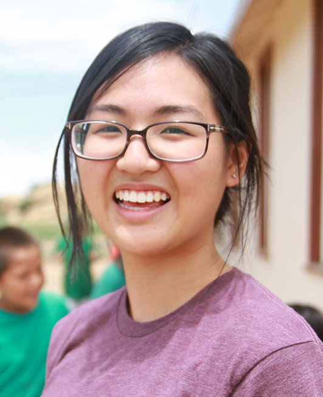

Hi, welcome to my website!
I'm Tina, a student at UC Berkeley, intending to graduate in 2017 with a major in cognitive science. I've loved art my entire life, and since coming to college, I channeled that into design, which led me to explore computer science as well. I'm interested in web design and development, as well as general user experience design. I started constructing this website in July 2015, to present my work and introduce myself to visitors like yourself! I intend to continue adding to it and also make it a technical and creative outlet to see what interesting ways I can make it evolve.